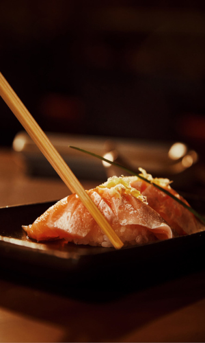

Como diz o próprio nome Yü, excelência em japonês, cumpre o que seu nome promete.
Traz a tradicional gastronomia japonesa com excelentes cortes de peixe fresco aliados a toque de modernidade, sem perder a essência e tradição de sua origem, em um ambiente clássico e moderno com detalhes industriais dos restaurantes japoneses cosmopolitas a gravuras e paisagismo dos mais tradicionais
Faça sua ReservaConfira nosso cardápio
Ver cardápioOu pelos telefones (11) 3514-8734 de Segunda a Sexta-feira das 08:30 às 18:00
